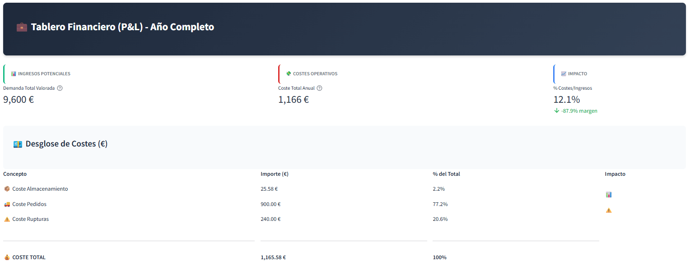
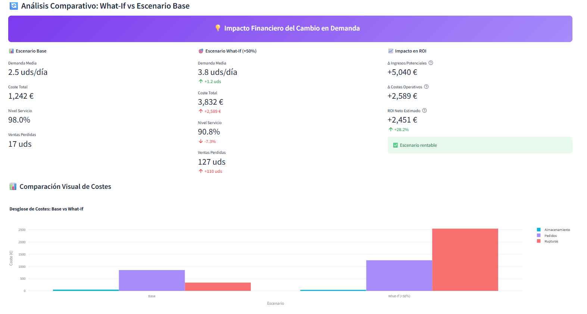
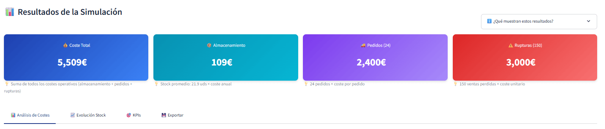

📊 Supply Chain Simulator
Simulador profesional de cadena de suministro con tablero financiero P&L. Optimiza inventario, reduce costes y mejora el nivel de servicio usando eventos discretos.
Abrir Simulador¿Qué es?
Supply Chain Simulator es una aplicación empresarial profesional que permite modelar y analizar estrategias de gestión de inventario para retail. Con un tablero financiero P&L integrado, visualizas el impacto en euros (no solo unidades) de cada decisión operativa.
Utilizando simulación de eventos discretos (SimPy), experimentas con parámetros como punto de reorden (ROP), cantidad económica de pedido (EOQ) y lead time para encontrar la configuración óptima que minimice costes y maximice el nivel de servicio.
✨ Experiencia "0 Segundos": La app carga con datos de demostración pre-ejecutados. Ves gráficos, métricas financieras y el tablero P&L inmediatamente, sin configurar nada. Ideal para presentaciones ejecutivas.
Características Principales
Simulación Realista
Modela 365 días de operación con diferentes patrones de demanda (uniforme, normal, Poisson) y factores estacionales configurables.
Tablero Financiero P&L
Dashboard ejecutivo con métricas en euros (€). Ingresos potenciales, costes operativos, % impacto en margen y desglose P&L completo. Habla el idioma del CFO.
Datos Semilla (0 Segundos)
Carga instantánea con simulación pre-ejecutada. Gráficos y métricas visibles inmediatamente. Tiempo hasta el "asombro": cero.
Optimización Automática
El motor de optimización busca la mejor combinación de ROP y Q mediante grid search, mostrando mapas de calor interactivos.
Diseño Corporativo Profesional
Paleta azul corporativa (no prototipo naranja). Cumple WCAG AA. Gradientes, toolbar minimalista. Aspecto de aplicación empresarial (SAP/Simul8).
Visualizaciones Interactivas
Gráficos Plotly dinámicos con tooltips. Evolución de stock, pedidos, distribución de demanda, análisis de sensibilidad y mapas de calor.
Análisis What-If Interactivo
Slider en tiempo real para simular cambios de demanda (+50%, -20%, etc.). Visualiza el ROI neto instantáneamente con comparación lado a lado Base vs What-If.
Comparación de Escenarios
Compara automáticamente el impacto financiero: Δ Ingresos, Δ Costes, ROI Neto. Recomendaciones estratégicas según el escenario (aumenta ROP, reduce Q, etc.).
Exportación Profesional
Excel con 3 hojas (Resumen Financiero €, Datos Diarios, Parámetros). Reportes TXT formateados. Listos para presentaciones ejecutivas.
¿Cómo Funciona?
1. Configuración de Parámetros
Define los parámetros clave de tu política de inventario:
- Punto de Reorden (ROP): Nivel de stock que dispara automáticamente un nuevo pedido
- Cantidad de Pedido (Q): Número de unidades solicitadas en cada orden
- Lead Time: Tiempo de entrega del proveedor (en días)
- Patrón de Demanda: Distribución estadística y factores estacionales
- Estructura de Costes: Costes de pedido, almacenamiento y ruptura
2. Simulación de Eventos
El motor de simulación (basado en SimPy) ejecuta un año completo de operaciones:
- Genera demanda diaria según la distribución configurada
- Gestiona inventario automáticamente según la política ROP-Q
- Registra pedidos, entregas y rupturas de stock
- Calcula costes en cada evento del sistema
3. Análisis Financiero y Optimización
La herramienta analiza los resultados y proporciona:
- Tablero P&L: Ingresos potenciales, costes operativos (€), % impacto en margen
- What-If Interactivo: Slider para simular escenarios de demanda (±100%). Comparación automática Base vs What-If con ROI neto estimado
- KPIs ejecutivos: Nivel de servicio (%), rotación, fill rate, coste total (€)
- Recomendaciones EOQ: Cantidad económica de pedido dinámica según demanda y costes actuales
- Análisis de sensibilidad: Gráficos de impacto de ROP/Q en costes totales
- Desglose P&L: Almacenamiento, pedidos, rupturas (€ y %)
- Recomendaciones estratégicas: Alertas automáticas basadas en escenarios What-If
Casos de Uso
Perfecto para estudiantes de supply chain, logística u operations management. Permite experimentar con conceptos teóricos (EOQ, safety stock, lead time) en un entorno seguro.
Valida estrategias de inventario con impacto financiero en euros. Simula temporadas altas (estacionalidad Navidad/Verano), promociones y cambios en lead time. Presenta el P&L al CFO para justificar inversiones en inventario.
Herramienta de prototipado rápido para presentar propuestas a clientes. Demuestra el impacto económico de cambiar políticas de inventario.
Capturas de Pantalla
💼 Tablero Financiero P&L
Vista completa: Demanda valorada (9,180€), Coste Total (1,241€), Impacto 13.5% con -86.5% margen. Desglose P&L en tabla con € y % del total.
🔄 Análisis What-If Interactivo
Comparativa financiera: Demanda media (2.5 → 3.8 uds/día), Coste Total delta (-78€), Nivel Servicio (100.0%), ROI Neto (-832€) con indicador de rentabilidad.
📊 Resultados de Simulación
Vista ejecutiva: 4 tarjetas con gradientes corporativos. Stock promedio, número de pedidos, y costes con tooltips explicativos.
🎯 Asistente Inteligente EOQ

Ayuda contextual en tiempo real El asistente EOQ muestra advertencias cuando la cantidad actual (Q) difiere del óptimo calculado. Incluye métrica visual con delta vs actual, y visualización de parámetros clave como demanda anual (D), coste de pedido (S) y coste de almacenamiento (H).
💡 Ejemplo: Con D=1369 uds/año, S=100€ y H=5€, el EOQ óptimo es ~234 unidades. Si tu Q actual es 50, verás una advertencia con la diferencia (+183 vs actual).
Métricas de Calidad
Tiempo hasta Asombro
0 segundos - Gráficos, métricas P&L y tablero financiero visibles al instante con datos semilla pre-cargados
What-If Interactivo
100% Implementado - Slider en tiempo real (0.5x-2.0x), comparación automática, ROI neto, recomendaciones estratégicas
Accesibilidad WCAG
AA Completo - Contraste 14.7:1 (texto), 9.2:1 (botones), optimizado para daltonismo
Diseño Profesional
10/10 - Paleta corporativa azul (#1E3A8A), gradientes coherentes, toolbar minimalista, aspecto empresarial
Tablero Financiero P&L
Completo - Todas las métricas en € con desglose de costes, % impacto en margen, ROI comparativo
EOQ Dinámico
Reactivo - Recalcula según demanda What-If, costes actuales, persistencia session_state
Stack Tecnológico
Desafíos Técnicos Resueltos
Durante el desarrollo del simulador, enfrenté varios retos interesantes:
- Experiencia "0 Segundos": Implementación de datos semilla con simulación automática al cargar. Session state inicializado con resultados pre-calculados para visualización instantánea
- Tablero Financiero P&L: Diseño de dashboard ejecutivo con métricas en € (no solo unidades). Cálculo de ingresos potenciales, % costes/ingresos, y desglose P&L con formato profesional
- Performance: Optimización de simulaciones para ejecutar 365 días en <1 segundo mediante vectorización NumPy y procesos concurrentes SimPy
- Diseño Corporativo: Theming profesional con config.toml (paleta azul #1E3A8A). Cumplimiento WCAG AA (contraste 14.7:1). Gradientes CSS coherentes en toda la app
- UX Profesional: Interfaz con validaciones en tiempo real, tooltips explicativos, popovers contextuales, y banner informativo para datos demo
- Visualización Avanzada: Gráficos Plotly dinámicos con paleta corporativa coherente. Pie charts, histogramas, scatter plots, mapas de calor y análisis de sensibilidad
- Optimización Grid Search: Algoritmo eficiente con progress bars para 100+ combinaciones. Visualización de resultados en heatmaps interactivos
- Análisis What-If en Tiempo Real: Sistema interactivo con slider (0.5x - 2.0x demanda). Comparación automática Base vs escenario modificado con cálculo de ROI neto (Δ Ingresos - Δ Costes). Recomendaciones estratégicas contextuales con protección contra división por cero
- EOQ Dinámico: Cálculo reactivo de Cantidad Económica de Pedido que responde instantáneamente a cambios en demanda (multiplicador What-If), costes de almacenamiento y costes de pedido. Persistencia mediante session_state para mantener valor entre ejecuciones
- Gestión de Estado: Session state robusto en Streamlit para mantener resultados entre interacciones. Exportación sin pérdida de datos (Excel con formato €, TXT, CSV)
Pruébalo Ahora
La aplicación está desplegada en Streamlit Cloud y es completamente gratuita.
Abrir Simulador